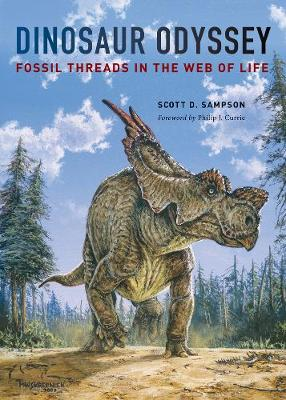

Here is an up-to-date book that ably documents existing knowledge pertaining to the biology and
evolution of dinosaurs. The volume is both attractive and well-designed. A forward was contributed
by Philip Currie, dinosaur expert extraordinaire, and the subject matter was reviewed by colleagues
familiar with Mesozoic fossil fields around the world. Emphasis is unabashedly focused on dinosaurs.
Restorations by Michael Skrepnick grace the volume, and the text is creative, fresh, and folksy.
Indeed, the chapter headings are so creative that they tend to obscure the progression in thought.
(Original chapter headings, sequentially, are as folows: Treasure Island, Stardust saurians,
Dramatus dinosaurae, Drifting continents, Solar eating, River of life, Green gradient, Panoply of
predators, Hidden strands, Horn-heads and duckbills, Goldilocks hypothesis, Cinderellasaurus,
Jurassic Park dreams, West Side Story, and The way of all creatures.) Alternative headings arranged
in sequence could read: Discovery, Place in time, Relationships, Plate tectonics, Solar energy,
Evolution, Vegetation and feeding, Carnivorous dinosaurs, Microfauna, Herbivorous dinosaurs,
Metabolism.
The book will surely excite the interest of those with interests in natural history. We learn that
dinosaurs gradually replaced their proto-dinosaurian forerunners, benefitted from physiological
economies associated with gigantism, possessed metabolisms midway between “cold-blooded” and
“hot-blooded,” and gave rise to birds. These inferences reflect a current consensus among
paleontologists who study dinosaurs. The facts of dinosaurian life are presented with a zest only
exceeded by a spirited endorsement of environmental education in the epilogue. Many subthemes appear
along the way. Among them, the most fascinating are the incidents of discovery and insight,
stimulated by semi-arid landscapes in western Madagascar, migrating wildebeest herds in northern
Kenya, and the silent austerity of Californian redwood forests. Readers, like this reviewer, will be
delighted by little asides such as 90% of the cells in the human body are nonhuman, only 5% of a
tree is living, erosion would be a 1000 times more rapid on a lifeless Earth, and fungi defend
conifer needles from insect attack. The silhouettes depicting the size of various kinds of dinosaurs
in relation to that of humans are very informative. A glossary is provided, as well as an excellent
index. A compendium of notes at the volume’s end should not be overlooked as they contain
interesting, late-breaking information.
The author underscores conceptual milestones, or “paradigm shifts,” that promoted an understanding
of the character of the dinosaurian world. Hutton recognized the depth of geologic time, Darwin
understood the efficacy of natural selection, Wegener realized that continents slowly move, and
Hennig quantified the interrelationships of organisms. These intellectual tools breathed life into
fossilized skeletons, and produced an ongoing “dinosaurian renaissance” championed by Ostrom and
Bakker. Unlike some other accounts of dinosaurs, a time line does not dominate the text. The “Alpha”
of the dinosaurian era was a single bacterial cell that also marked the beginning of life on Earth;
its “Omega” was an extinction probably (but not certainly) caused by the impact of an asteroid.
Above all, the evolution of dinosaurs was driven by climates and continental drift across the
surface of a long enduring “hothouse” Earth. In fidelity to the author’s passion for dinosaurs, the
apex of his evolutionary saga is charmingly occupied by … a dinosaur (see figure 2.3)! For him,
outstanding attributes of evolution are cyclical or episodic and “systems within systems.” These are
illustrated by depictions of convection within the Earth (figure 4.2), the descent of dinosaurs
(figure 2.3), and biological energy flow during the Cretaceous (figure 5.1). In his “river of life,”
fluidity does not imply directionality, but rather continuity in evolution. Populations, not
individuals, evolve, but directional change is brief and does not accumulate. Humankind is
definitely not the culmination of evolution; bacteria remain the fundamental and ecologically most
important form of life.
Fossil Threads in the Web of Life
